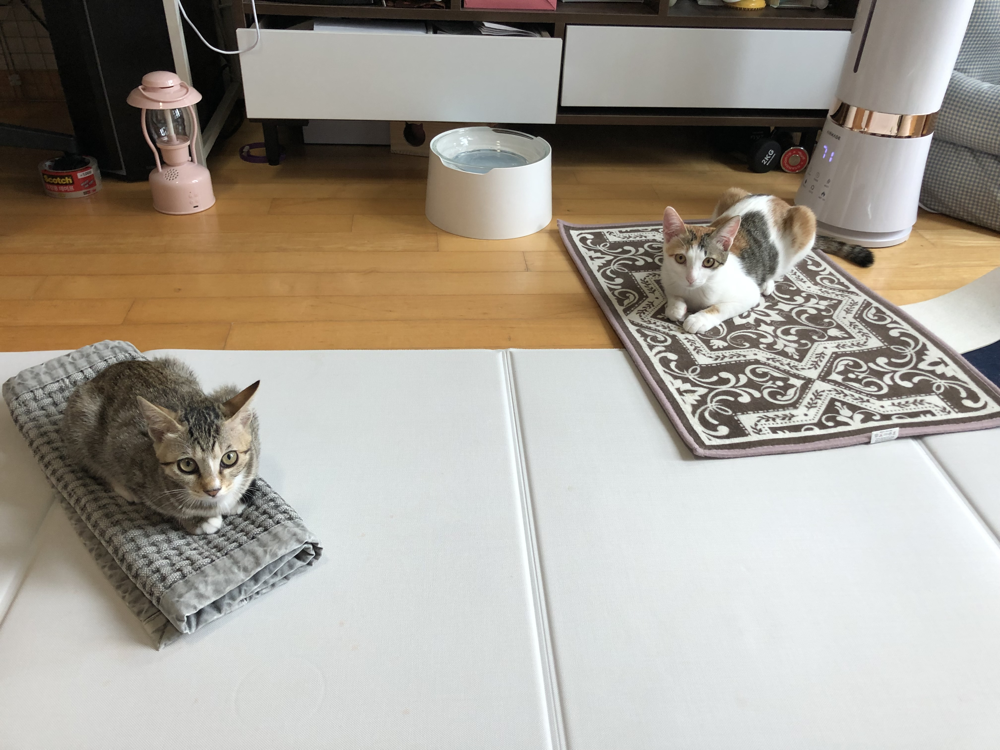

MY CATS
Two cats:Salgoo & Goosle
Salgoo
Goosle
고양이들을 소개합니다
살구
와
구슬이
는 분당에 위치한 언니집에 살고 있는 작고 보드라운
아기야옹이들
이다.
살구는 올해 7월, 구슬이는 10월달에 언니의 집에 왔다.
둘 다 길에서 구조되었다.

Please enable JavaScript to view the
comments powered by Disqus.